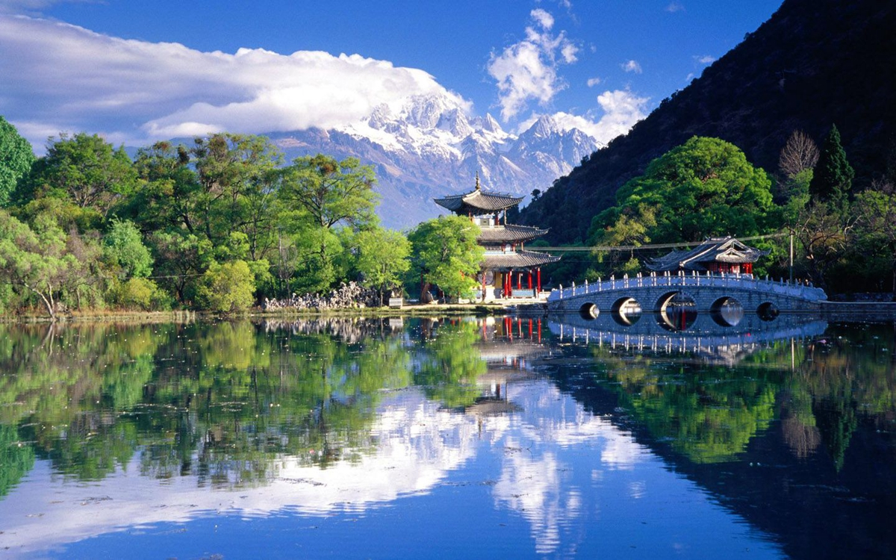

昆明简介
昆明地处中国西南地区、云贵高原中部，位于东经102°10'—103°40'，北纬24°23'—26°22'之间，处在南北国际大通道和以深圳为起点的第三座东西向亚欧大陆桥的交汇点，是中国面向东南亚、南亚开放的门户城市，位于东盟“10+1”自由贸易区经济圈、大湄公河次区域经济合作圈、泛珠三角区域经济合作圈的交汇点。中国昆明进出口商品交易会、中国国际旅游交易会、中国昆明国际旅游节使昆明成为中国主要的会展城市之一。
昆明市是国家历史文化名城，早在三万年前就有人类在滇池周围生息繁衍；楚顷襄王十九年（前278年）滇国建立，定都于此；唐永泰元年（765年）南诏国筑拓东城，为昆明建城之始；明末时期，南明永历政权在昆明建都。昆明属北亚热带低纬高原山地季风气候，为山原地貌，由于地处低纬高原而形成“四季如春”的气候，享有“春城”的美誉。
昆明地貌
昆明市中心海拔约1891m。拱王山马鬃岭为昆明境内最高点，海拔4247.7m，金沙江与普渡河汇合处为昆明境内最低点，海拔746m。市域地处云贵高原，总体地势北部高，南部低，由北向南呈阶梯状逐渐降低。中部隆起，东西两侧较低。以湖盆岩溶高原地貌形态为主，红色山原地貌次之。大部分地区海拔在1500~2800m之间。
